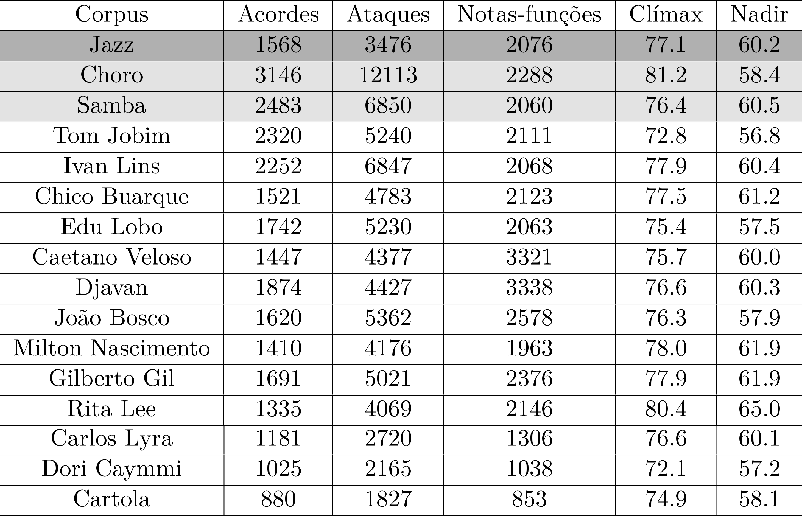
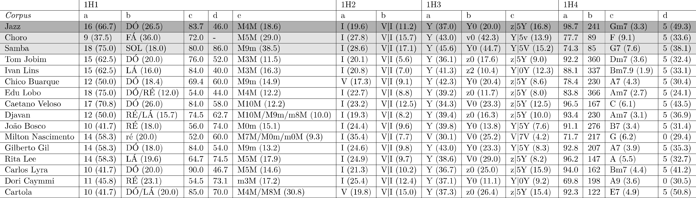
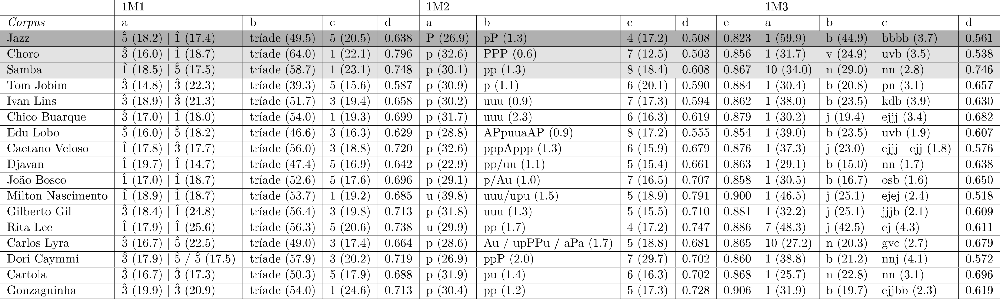

Atributos primários de avaliação
1 Introdução
Os atributos (e métricas) que adotamos para a avaliação das análises podem ter natureza quantitativa ou qualitativa, bem como podem ser associados a marcadores estilísticos (ver Capítulo sobre Estilo Musical).
Buscando um refinamento, classificamos os atributos em três categorias básicas, primários (apresentados neste capítulo), secundários e terciários (contemplados em capítulos específicos). As principais diferenças entre essas categorias se encontram nos seus respectivos graus de complexidade e detalhamento, bem como no quanto contribuem para evidenciar questões e demarcações estilísticas. Assim, enquanto os atributos secundários são potenciais definidores de estilo, os primários, ainda que importantes, não apresentam, tão marcadamente essa capacidade (apenas se vistos em conjunto). Na verdade, os atributos secundários, por assim dizer, “revisam” atributos primários a eles correspondentes, examinando-os de outras perspectivas, em geral mais amplas e, ao mesmo tempo, detalhadas. Podemos ainda considerar, de um modo um pouco mais livre, que os atributos secundários evidenciam os contextos nos quais os atributos primários se inserem. Por sua vez, atributos terciários podem ser vistos como uma espécie de sintonia fina dos secundários, tendo como principais características a natureza eminente quantitativa e o fato de considerarem todo o conjunto de cada um de seus atributos (enquanto os secundários envolvem mais seus aspectos qualitativos).
2 Critérios de nomenclatura para atributos primários e secundários1
Os atributos primários e secundários são agrupadas internamente em relação aos domínios (harmonia e melodia),2 a níveis de organização e a aspectos específicos desses níveis. Para uma rápida identificação, os aspectos são rotulados de acordo com a fórmula “mXnp”, onde m é o número que indica o nível do atributo – primário (m = 1) ou secundário (m = 2) –, X é a letra que representa o domínio considerado (H, para harmonia, M, para melodia), n é o número do nível em questão (n = 1, 2, 3 ou 4) e p é uma letra sequencial em caixa baixa identificadora do aspecto específico (p = a, b, c, d, …). Assim, por exemplo, o rótulo 1H3b corresponde a um atributo estilístico primário (1) vinculado ao domínio da harmonia (H) associado ao terceiro nível (3, que é referente aos tipos acordais), considerando o segundo aspecto (b, que se refere à categoria funcional mais recorrente dentro do corpus em análise).
3 Atributos primários
Por hipótese, os atributos primários evidenciam especialmente (mas não apenas) elementos estruturais compartilhados por compositores pertencentes a um determinado superconjunto estilístico. Foram definidos 35 atributos primários, 19 associados ao domínio harmônico e 16 ao domínio melódico. São as seguintes suas descrições básicas:
3.1 Atributos primários harmônicos
1H1 – nível das tonalidades (contém cinco aspectos):
- 1H1a – informa o número de tonalidades distintas empregadas dentro de cada corpus (bem como o percentual diante do total possível – 24), incluindo principais e secundárias (ou seja, aquelas obtidas por modulação interna).
- 1H1b – identifica a tônica mais recorrente. Por convenção, maiúsculas indicam tonalidades maiores (DÓ, SOL etc.) e minúsculas as menores (ré, si♭ etc.). O atributo indica ainda o percentual de sua ocorrência.
- 1H1c – informa a distribuição percentual das tonalidades principais em modo maior.
- 1H1d – informa a distribuição percentual de peças monotônicas (em oposição às pluritônicas).
- 1H1e – identifica a relação binária tonal (RBT) mais recorrente, incluindo sua frequência percentual.
1H2 – nível das funções (contém dois aspectos):
- 1H2a – identifica a categoria funcional mais recorrente, incluindo sua distribuição percentual.
- 1H2b – identifica a relação binária funcional (RBF) mais recorrente, incluindo sua distribuição percentual.
1H3 – nível dos tipos acordais (contém três aspectos):
- 1H3a – informa o genus de tipos acordais mais recorrente, incluindo sua distribuição percentual.
- 1H3b – identifica o tipo acordal mais recorrente, incluindo sua distribuição percentual.
- 1H3c – identifica a relação binária abstrata (RBA) mais recorrente, incluindo sua distribuição percentual.
1H4 – nível dos acordes específicos (contém quatro aspectos):
- 1H4a – informa a distribuição percentual de acordes em estado fundamental (em relação aos invertidos).
- 1H4b – informa o número de acordes específicos distintos empregados.
- 1H4c – identifica o acorde específico mais recorrente, incluindo sua distribuição percentual.
- 1H4d – identifica o movimento intervalar de baixos mais recorrente entre acordes contíguos, incluindo sua distribuição percentual.
3.2 Atributos primários melódicos
1M1 – nível das notas-funções (contém quatro aspectos):
- 1M1a – identifica o grau escalar mais recorrente, considerando os modos maior e menor, informando seus percentuais em relação ao total de casos.
- 1M1b – identifica a categoria de nota-função mais recorrente (neste caso, englobando ambos os modos), informando sua distribuição percentual.
- 1M1c – identifica a nota-estrutural mais recorrente (englobando ambos os modos), informando sua distribuição percentual.
- 1M1d – informa o índice de ancoragem (ia) médio do corpus.
1M2 – nível do contorno melódico (contém cinco aspectos):
- 1M2a – identifica a c-letra mais recorrente, informando sua distribuição percentual.
- 1M2b – identifica a c-palavra mais recorrente, informando sua distribuição percentual.
- 1M2c – identifica a cardinalidade de c/r palavra mais recorrente, informando sua distribuição percentual.
- 1M2d – informa o índice de economia intervalar (iE) médio do corpus. .
- 1M2e – informa o índice de economia intervalar compensada (iEc) médio do corpus. .
1M3 – nível do ritmo (contém quatro aspectos):
- 1M3a – identifica o ponto de ataque mais recorrente do perfil métrico, informando sua distribuição percentual.
- 1M3b – identifica a r-letra mais recorrente, informando sua distribuição percentual.
- 1M3c – identifica a r-palavra mais recorrente, informando sua distribuição percentual.
- 1M3d – informa o índice de contrametricidade (ic) médio do corpus.
4 Resultados
Antes de iniciarmos propriamente o exame dos resultados das análises dos atributos primários harmônicos e melódicos, convém apresentar alguns dados básicos compilados referente aos corpora (de análise e de controle), como mostra a tabela abaixo:3

4.1 Atributos primários harmônicos
As duas tabelas que informam os resultados das análises sob a ótica dos atributos primários (harmônicos e melódicos) trazem, para cada corpus informações de diversas naturezas: símbólica (por exemplo, c-letras, cifras acordais etc.), numérica (índices de ancoragem, de contrametricidade etc.) e percentuais (quase sempre entre parênteses e muitas vezes complementando dados simbólicos ou numéricos). Após cada tabela, discussões de cada atributo isolado, baseadas em avaliações das estruturas musicais (e estéticas) envolvidas, são apresentadas.4

4.1.1 Discussão
4.1.1.1 Relações tonais (1H1)
1H1a – Com a exceção dos corpora Choro, João Bosco, Carlos Lyra, Dori Caymmi e Cartola (todos em volta de 10%), os demais são consideravelmente semelhantes na diversidade de tonalidades empregadas (variando entre 50 e 75% do total possível), incluindo tônicas principais e secundárias, o que sugere ser tal atributo um marcador centrípeto em relação ao superconjunto “Música Popular Urbana do Brasil”. Reforça-se assim a noção de que a exploração de um espectro amplo de alternativas tonais é uma regra compartilhada.5
1H1b – A preferência por uma tônica específica num determinado corpus pode ser explicada por tantas razões (e idiossincrasias) que o atributo é certamente inócuo para os propósitos de marcação estilística. A despeito disso, chama bastante a atenção o fato de que o corpus Milton Nascimento é o único em que a predominância recai sobre uma tonalidade menor (ré), o que se apresenta, provavelmente, como uma característica individual marcante do compositor.
1H1c – Aqui vemos novamente a provável ação de uma regra compartilhada por membros do superconjunto “Música Popular”, que congrega todos os corpora (e, provavelmente, também do conjunto superordenado a este, “Música Tonal”). No entanto, parece ser significativo o relativo alto percentual do modo menor nos corpora Edu Lobo, João Bosco, Milton Nascimento e Dori Caymmi (beirando a metade do total nos quatro casos), um fato que requer estudos futuros.
1H1d – É necessário, inicialmente, diferenciar o caso do corpus Choro dos demais, já que nesse gênero, ao contrário do que acontece no Jazz e no Samba, é idiomático o emprego de modulações seccionais (ou seja, assocadas às delimitações entre seções, uma característica herdada pela forma rondó.6 Portanto, tal característica implica a inexistência de peças monotônicas nesse corpus, tornando-o incomparável aos demais em relação a tal aspecto, no sentido de se extrair informações estilísticas significativas, bem entendido. No caso do corpus Samba, por outro lado, chama a atenção a alta proporção de peças monotônicas, o que não apenas pode ser um reflexo da seleção livre do repertório: de fato, pela experiência adquirida na audição de uma grande quantidade de sambas, parece-nos que de fato que o emprego de modulações como estratégia para contraste tonal é menos comum do que em outros gêneros, algo que pode ser investigado com mais propriedade em trabalhos futuros.
1H1e – Temos aqui uma clara diferenciação entre os corpora de análise e os de controle Samba e Choro (representantes do superconjunto “Música Popular Urbana do Brasil”), um fato que vem reforçar duas das hipóteses inicialmente elencadas: enquanto que nos dois gêneros observa-se a preponderância de relações binárias tonais “notáveis” (respectivamente, M5M e M9m),7 os corpora Jobim, Ivan Lins, Edu Lobo e, um tanto surpreendentemente, Cartola têm como mais recorrente RBTs do tipo “mediântica cromática” (M3M, M4M, M8M e M9M), o que também acontece no corpus Jazz, sugerindo uma afinidade estilística neste aspecto, como foi hipotetizado. Os corpora Caetano Veloso e Djavan, embora apresente relações mediânticas com certo destaque, têm a RBT M10M como predominante (além de M9m e m8M, no caso de Djavan). Já no corpus João Bosco, destoando mais destacadamente dos demais, observa-se a predominância de uma RBT “notável” homônima, M0m, o que também se observa no corpus Milton Nascimento.8 Esse tópico é retomado em maiores detalhes na discussão sobre atributos harmônicos secundários.
4.1.1.2 Funções (1H2)
1H2a – Como no atributo 1H1c, a quase por completa sintonia de todos os corpora em relação à categoria funcional mais comum – o I grau – favorece a interpretação de termos aqui uma nova evidência de regra geral.9 Certamente, o fato mais significativo de todos seja a relativamente alta presença da categoria I no corpus Milton (35.4%), a maior de todas (bem acima, aliás, do que se observa no grupo de controle), o que, provavelmente, é mais um sintoma da preponderância modal na música do compositor.
1H2b – Algo semelhante ocorre em relação a este atributo, desta vez com uma total convergência: como seria esperado em ambientes tonais, a fórmula funcional V|I é predominante. Novamente, numa leitura um pouco mais fina, podemos observar que, a despeito dessa predominância, o peso estatístico dessa RBF é consideravelmente menor nos corpora de análise do que no grupo de controle (destacando-se, neste caso, o corpus Jobim, com apenas 5.6% para o encadeamento), o que sugeriria igualmente uma maior diversidade funcional. No caso de Milton Nascimento, entretanto, a comparação com o atributo 1H2a parece, indiretamente, corroborar o esvaziamento do uso de forças tonais, já que, a despeito da forte presença de I em seu repertório, em apenas 7.7% das RBFs analisadas ele é precedido por V.
4.1.1.3 Tipos acordais (1H3)
1H3a – Neste aspecto, há uma quase uniformidade das preferências dos corpora (incluindo a perspectiva quantitativa) pelo genus Y.10 A única e notável exceção acontece no corpus Milton Nascimento, no qual a tríade maior (V) ocupa a posição de maior destaque, reforçando o caráter predominantemente modal dessa música.11
1H3b – Em relação ao tipo acordal mais comum dos repertórios, observamos quatro preferências divergentes: (1) o protoacorde dominante Y0 (em reforço aos resultados do atributo 1H3a), nos corpora Jazz, Samba, Chico Buarque, João Bosco, Gilberto Gil e Dori Caymmi; (2) acordes menores com sétima, nos corpora Jobim, Edu Lobo, Djavan, Carlos Lyra e Cartola (com o protoacorde z0) e Ivan Lins (aqui, a variante com nona z2); (3) a tríade menor v0, no corpus Choro e (4) a tríade maior (V0), nos repertórios de Caetano Veloso, Milton Nascimento e Rita Lee, talvez o resultado mais surpreendente da análise deste atributo, por serem estes os únicos corpora analíticos com maior peso em tríades do que em acordes mais densos.12
1H3c – Em relação a este atributo, podemos observar cinco tipos básicos de RBAs, quatro delas envolvendo a qualidade Y: (1) modelando a relação “dominante | alvo” (tríade maior – V – no corpus Samba e tríade menor – v – no Choro); (2) z|5Y, que modela a conhecida fórmula “two-five”, nos corpora Jazz, Jobim, Chico Buarque, Edu Lobo, Caetano Veloso, Djavan, Rita Lee, Carlos Lyra e Cartola; (3) modelando a fórmula de “dominantes consecutivos” (Y|5Y), nos corpora João Bosco e Gilberto Gil; (4) a RBA “estacionária” Y|0Y, nos corpora Ivan Lins e Dori Caymmi, associada a transformações internas (de tensões, especialmente) em preparações dominantes (por exemplo, 9–♭9 etc.); e (5) a relação V|7V, em destaque apenas no corpus Milton, que parece modelar a fórmula cadencial mixolídia IV-I, mais um elemento idiossincrático na harmonia do compositor (em relação a seus pares).
4.1.1.4 Acordes específicos (1H4)
1H4a – Trata-se de um atributo potencialmente inconclusivo, pois a maior ou menor presença de inversões de acordes, embora possa ser associado a certas preferências composicionais, depende também da fonte em que foram coletadas as partituras (que podem ter sido, por alguma razão, originalmente transcritas de maneira simplificada, omitindo possíveis movimentos de baixos). De todo modo, é digno mencionar a relativa alta percentagem (acima de 20%) de inversões nos corpora (nesta ordem): Dori Caymmi, Milton Nascimento, Samba, Choro e Chico Buarque.
1H4b – Neste atributo parece haver convergência em dois grandes grupos: os corpora Choro e Samba apresentam relativamente poucos acordes específicos distintos (87, em média) se comparados aos corpora de análise e Jazz (média de 306). Nesse quadro, os corpora Caetano Veloso, Carlos Lyra e Rita Lee se situam num nível mais ou menos equidistante dos dois extremos com, respectivamente, 167, 162 e 147 acordes distintos. Cartola, com 122 acordes, distancia-se mais em relação a esse nível. Embora não explicitamente, os resultados parecem sugerir a existência de uma correlação entre a quantidade de acordes específicos distintos e a complexidade harmônica, algo que poderá ser refinado com a avaliação dos atributos secundários.
1H4c – Apenas indiretamente a identificação de acordes específicos mais recorrentes em um corpus pode contribuir para evidenciar um traço estilístico, dada sua fragilidade como atributo e à dispersão com que se manifesta (as preferências nos corpora se apresentam, em geral, taxas variando entre 2 e 7%).
1H4d – Como em outros casos (por exemplo, 1H1c, 1H2a e 1H2b), este atributo evidencia uma regra compartilhada por quase todos os corpora, que na verdade emana da própria prática harmônica funcional-tonal, na qual a movimentação de fundamentais por intervalo de quarta ascendente.13 Os corpura Milton Nascimento e Dori Caymmi se apresentam como notáveis exceçções, já que o uníssono (repetição de baixo em acordes contíguos) é sensivelmente mais comum nesses repertorios (quase 1/3 dos casos em ambos).
4.2 Atributos primários melódicos

4.2.1 Discussão
4.2.1.1 Notas-funções (1M1)
1M1a – Como alguns dos atributos primários harmônicos, 1M1a evidencia mais uma regra da música tonal (compartilhada por todos os repertórios) do que uma estratégia, tendo em vista de que em todos os casos, o grau escalar mais recorrente (em ambos os modos) pertence ao arpejo do acorde tônico. Como reforço, suas distribuições percentuais são bastante próximas, variando entre 14 e 22%.
1M1b – Algo semelhante ocorre aqui, pois é quase uma consequência natural que em qualquer repertório tonal que a categoria básica de nota-função mais recorrente seja “tríade”. Talvez apenas a magnitude do percentual possa ser um sutil marcador. Como se observa, os corpora de controle Samba e Choro apresentam valores um pouco mais altos dos que demais conjuntos, respectivamente, 58.7 e 64.0%. Por outro lado, os corpora Jazz, Edu Lobo, Djavan e Jobim (especialmente este último, como 39%) são os que menos dependem das notas-funções triádicas, que ficam abaixo de 50%. Em posição intermediária, na faixa dos 50% dos apoios melódicos em notas da tríade, estão os corpora Ivan Lins, Chico Buarque, Caetano Veloso, João Bosco, Milton Nascimento, Gilberto Gil, Rita Lee, Dori Caymmi e Cartola.
1M1c – Este atributo apenas detalha o anterior, explicitando a nota-estrutural mais recorrente (fundamental, terça ou quinta) pertencente à categoria “tríade”. Neste caso, ao contrário de 1M1b, os percentuais são muito próximos em todos os corpora, variando de 15% (Jobim) a 23% (Samba).
1M1d – Em relação à ancoragem harmônica de notas-estruturais, observamos,14 como se esperava, valores maiores e coerentes nos grupos de controle Samba e Choro em oposição a uma maior convergência dos corpora analísticos e do corpus Jazz, o que se deve a uma idiomática maior presença de notas de tétrade e tensões nesses repertórios. Destaca-se mais uma vez o corpus Jobim, que tem em média o menor valor apurado para o índice de ancoragem (0.587), com Rita Lee apresentando o mais alto dentro dos repertórios MPB (0.738).15
4.2.1.2 Alturas (1M2)
1M2a – Embora todos os repertórios (com uma exceção) convirjam para a categoria “grau conjunto” como preferencial (e percentuais muito próximos) – sugerindo ser uma regra estilística compartilhada –, é instigante constatar que nos corpora Samba, Choro, Jobim, Ivan Lins, Chico Buarque, Edu Lobo, Caetano Veloso, Djavan, João Bosco, Gilberto Gil, Carlos Lyra, Dori Caymmi e Cartola a c-letra p (passo descendente) é predominante, em oposição ao que se observa no corpus Jazz, no qual a mais recorrente c-letra é P (passo ascendente). A hipótese de que poderia ser uma característica da música popular brasileira a predominância de movimentos em grau conjunto descendente apresenta-se assim como uma interessante futura via exploratória. Em contraste a esse quadro, no corpus Milton Nascimento a predominância (bem folgada, aliás) cabe ao movimento melódico de repetição (u), que reflete a notável estaticidade que prevalece na construção melódica do compositor, um aspecto certamento caracterizante. Caso semelhante se observa no repertório Rita Lee, diferenciando-se apenas pelo fato de o percentual de u ser menor (29.9% frente a 39.8% de Nascimento) e tendo bem próxima, em segundo lugar, a r-letra p (29.6%).
1M2b – Como já comentado, a grande dispersão das c-palavras (observada também nos resultados obtidos) dificulta a obtenção de conclusões consistentes em relação a este atributo.
1M2c – Quanto à cardinalidade das c/r palavras, parece haver uma convergência para um número médio de, aproximadamente, 6 articulações melódicas, confirmando nossos pressupostos, devidamente referendados por estudos sobre segmentação de melodias, entre os quais os (Snyder 2001).16
1M2d e 1M2e – Vistos em conjunto, os dois atributos – que, em suma, medem o grau de estabilidade melódica – corroboram, grosso modo, a noção geral de que existiria uma espécie de lei de compensação atuando em linhas melódicas, as quais, idealmente, tenderiam para a retificação (ou seja, saltos e vales tenderiam a se anular mutuamente). Tal hipótese fica evidente em 1M2e, pois todos os repertórios apresentam índices de estabilidade compensada com valores relativamente altos e bastante próximos entre si (a notável exceção é o corpus Milton Nascimento, com valores sensivelmente mais altos para os dois índices, reforçando a ideia da estaticidade melódica na música do compositor como elemento característico). A observação de 1M2d, por outro lado, embora também com valores próximos, permite destacar os corpora Jazz e Choro dos demais, pois apresentam iE baixos e bem semelhantes, sugerindo particularidades construtivas, talvez pela presença de um número relativamente maior de movimentos arpejados e saltos em uma única direção do que nos demais repertórios (o que também poderá ser verificado em estudos futuros específicos).
4.2.1.3 Ritmo (1M3)
1M3a – Como era esperado, a detecção do ataque mais recorrente no perfil métrico de quase todos os repertórios confirma a proeminência da posição 1 da grade. Há apenas duas exceções: (1) como era esperado, o corpus Samba tem em destaque a posição 10 (a quarta semicolcheia do tempo), sugerindo o alto grau de sincopação do gênero. Em patamar mais modesto, os corpora Carlos Lyra e Cartola também tem 10 como ponto de ataque mais recorrente, o que denota a forte presença do gênero samba em seus repertórios. O aspecto será melhor detalhado nos atributos secundários correspondentes.17 (2) no caso do corpus Rita Lee, a proeminência da posição 7 se deve ao fato de que, em média, as linhas melódicas da compositora apresentam grande recorrência de colcheias (ver também o atributo 1M3b), associando-se a uma forte tendência para finalizações contramétricas das r-palavras (o que contribui para uma maior presença da posição 7 em relação à posição cométrica 1).
1M3b – Nesta abordagem inicial sobre o atributo, que evidencia apenas a r-letra mais comum, os resultados são inconclusivos, pois tendem a capturar a alternativa b (ataque único, uma espécie de “I grau” rítmico), bastante comum em todos os repertórios (e é o que se observa nos resultados obtidos). Destaque-se as exceções que confirmam as células básicas dos gêneros dos corpora de controle: r-letras n (Samba)18 e v (Choro), bem como a alta porcentagem em que se manifesta b no Jazz (cerca do dobro em relação a outros repertórios). Registre-se também a proeminência de j nos corpora Chico Buarque, Caetano Veloso, Milton Nascimento, Gilberto Gil e Rita Lee (neste, o maior percentual de todos – 42.5% – quase o dobro em relação à média referente a essa r-letra). Resultados mais significativos sobre o aspecto em questão serão trazidos no exame dos atributos secundários correspondentes.
1M3c – Algo semelhante ao observado no atributo 1M2b (que mede a distribuição das c-palavras) ocorre aqui, ainda que numa relativamente menor dispersão: o grande número de r-palavras dificulta a obtenção de conclusões substanciais na comparação dos corpora.19
1M3d – Neste caso, ao contrário do que é observado nos índices de compensação intervalar, a medição do índice de contrametricidade produz informações relevantes em relação à determinação estilística. É possível dividir os corpora, nesse aspecto, em três níveis de sincopação: (1) alto (acima de 0.7), liderado pelo corpus Samba; (2) médio (entre 0.6 a 0.7), com vários dos repertórios analíticos (tendo o corpus Cartola, dentre esses, o maior valor relativo para ic) e (3) baixo (menor que 0.6), com os repertórios de Choro, Jazz, Caetano Veloso, Dori Caymmi e Milton Nascimento (o menor valor de todos). Isso nos leva a conjecturar que tal característica abstrata do samba (levando em conta aqui apenas a sincopação rítmica, bem entendido) se infiltra, em maior ou menor medida, em alguns estilos composicionais individuais. O exame dos atributos secundários buscará validar esta hipótese.
Referências
Notas de rodapé
Os atributos terciários são identificados com uma simbologia distinta.↩︎
O domínio melódico, por sua vez, subdivide-se em subdomínios: notas-funções, alturas e ritmo.↩︎
Não deve ter passado despercebida a maior discrepância referente aos números de acordes e, especialmente, de ataques no Choro comparado à média dos demais corpora: isso deriva do fato de que cada peça de choro considerada compreende três seções (em geral com 16 compassos cada), o que faz com que os “territórios” cobertos nesse repertório pela análise correspondam a quase o dobro em relação a qualquer outro. Por outro lado, é bem interessante constatar , por assim dizer,o “conservadorismo” estilístico que foi detectado no gênero, mantendo uma considerável consistência e regularidade.↩︎
Avaliações estatísticas desses resultados serão oportunamente apresentadas.↩︎
Nesse sentido, a relativa menor expansão que se observa nos choros pode ser talvez explicada pela combinação de dois fatores: (a) uma preferência acentuada por tonalidades que otimizam o número de cordas soltas nos instrumentos típicos do gênero (violão, bandolim e cavaquinho), diminuindo o número de alternativas disponíveis; (b) um esquema relativamente rígido de modulações, que faz com que escolhida a tonalidade principal, na seção A (por exemplo Fá maior), as tonalidades das partes secundárias sejam praticamente definidas. No caso do exemplo, há duas possibilidades para as seções B e C: Ré menor e Si\(\flat\) maior ou Dó maior e Si\(\flat\) maior. Para maiores informações, ver (Almada 2006). Em relação a Lyra, Caymmi e Cartola, a menor diversidade tonal possivelmente resulta de serem corpora provenientes da segunda fase do projeto, que contemplam um número menor de peças analisadas em relação aos repertórios da fase 1.↩︎
Ver Almada (Almada 2006). Tanto nos demais corpora de controle, quanto nos de análise, modulações seccionais, ainda que eventualmente existentes, são bem mais raras. Nesses contextos, modulações internas a seções (de diferentes tipos) são mais comuns (e quase inexistentes em choros).↩︎
Os repertórios de Chico Buarque e Gilberto Gil também apresentam maior proeminência da relação M9m, que conecta uma tonalidade maior à sua relativa menor. A relação M5M, por sua vez é a mais comum no corpus Rita Lee.↩︎
Aqui empatada em primeiro lugar com outra – e mais rara – relação homônima m0M, bem como com a também “notável” M7M. A esse propósito, a distribuição das RBTs no repertório deste compositor parece bem mais idiossincrática do que as de seus pares, o que certamente é um sintoma de sua preferência por construções modais (de variadas naturezas), algo que o torna bem distinto no âmbito MPB. Outros aspectos dessa circunstância serão levantados na avaliação de outros atributos harmônicos, tanto primários quanto secundários.↩︎
A única divergência – o V nos corpora Chico Buarque e Cartola – não causa impacto nessa conclusão, já que ambas as categorias ocupariam provavelmente as posições mais altas, independentemente do repertório analisado, dentro do contexto da música tonal.↩︎
Isso sugere que esse dado pode também ser associado a uma regra geral (ou seja, como um marcador centrípeto em relação ao superconjunto). No caso do corpus Rita Lee, o genus Y apresenta um percentual relativamente alto, considerando os demais casos, o que por certo se deve à alta presença de uma lógica harmônica baseada no gênero rhythm and blues, caracterizado pelo uso de qualidades dominantes “não funcionais”.↩︎
A segunda posição é ocupada pelo genus z, tendo Y apenas no terceiro posto.↩︎
Isso pode ser talvez parcialmente explicado pelas características gerais das harmonias de cada compositor: Caetano, em sua estética pessoal, tropicalista, em essência, parece ser menos permeável à influência jazzística (ao contrário de vários de seus pares da MPB), e mais ligado ao rock e a gêneros brasileiros de origem não urbana, como o afoxé, o samba-de-roda etc. No caso de Milton, como já apontado nas avaliações de atributos anteriores, a preferência por tríades maiores (mas, interessantemente, não exatamente pelas menores), parece bem mais fortemente associada à natureza essencialmente modal de sua música.↩︎
Schoenberg (1969) identifica o intervalo como o principal movimento para a concatenação dos acordes, classificando-o como um “movimento forte entre fundamentais”. A necessidade de precisão nos obriga a ressaltar que, embora o atributo 1H4d seja dedicado a medir movimentos entre os baixos de acordes contíguos, captura também os movimentos entre suas fundamentais. Se considerarmos a relativamente baixa ocorrência de inversões, em modo geral, ficará claro que o atributo também pode ser entendido, com uma certa flexibilidade, como um medidor das distâncias entre fundamentais.↩︎
Representada pelo índice ia – ver Capítulo Modelos teóricos.↩︎
Além do valor ia de Rita lee, apenas os de Gilberto Gil, Caetano Veloso e Dori Caymmi ficam acima de 0.7, dentre os repertórios MPB.↩︎
Apenas o corpus Jazz parece se distanciar desse eixo (com preferência por segmentos com quatro articulações), o que pode suscitar estudos futuros específicos.↩︎
Para um detalhamento desse tópico, ver (Almada e Zisels 2023).↩︎
O mesmo se observa na música de Lyra e Cartola, corroborando os dados obsefvados no atributo anterior.↩︎
Registre-se, entretanto, o significativo fato de que nos corpora Djavan e Cartola a r-palavra mais comum é a mesma predominante no corpus Samba – nn –, o que pode denotar a forte contrametricidade de ambos os repertórios.↩︎